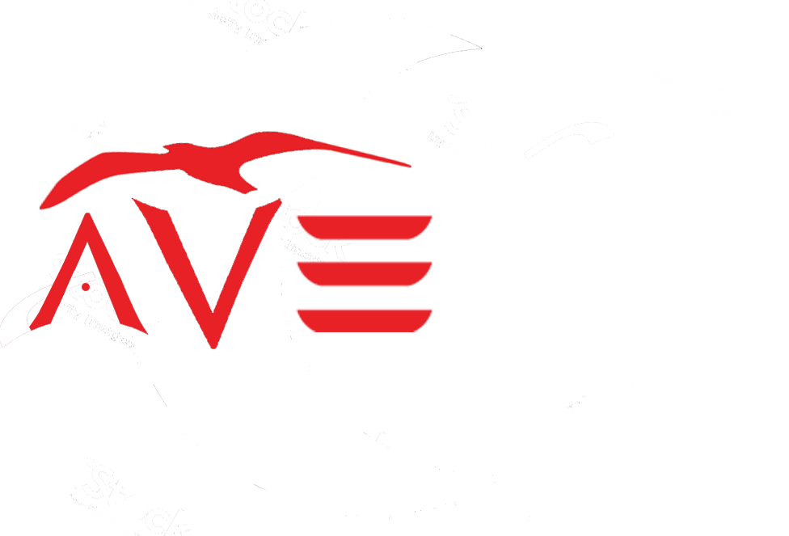
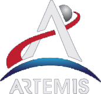

Queremos Enseñarte a Crecer Profesionalmente, Crecer Personalmente, Verte Bien, Sentirte Bien y Vivir de Forma Saludable

WE CAN BUILD THE FUTURE
Te invitamos a conocer El Proyecto Artemis que llevara a la primera mujer a la luna en 2024

Con el programa Artemis, la NASA llevará a la primera mujer y al próximo hombre a la Luna para 2024,
utilizando tecnologías innovadoras para explorar la superfice lunar como nunca antes.
Colaboraremos con nuestros socios comerciales e internacionales y estableceremos una exploración
sostenible para finales de la década. Luego, usaremos lo que aprendamos en la Luna y sus alrededores
para dar el siguiente salto gigante: enviar astronautas a Marte.
"Science will be integral to Artemis mission, and we look forwrd to planning missions of human
and scientific discovery that draw on the thoughful work of this team"... Kathy Lueders
Lead NASA's human spaceflight program as Associate Administrator of Human Exploration and Operation Mission Directorate